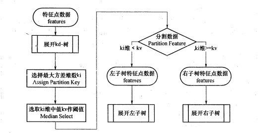
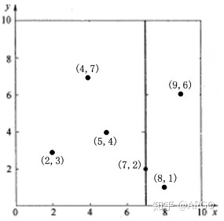
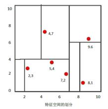
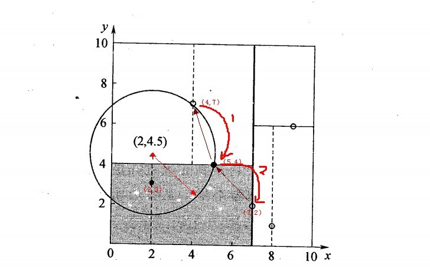
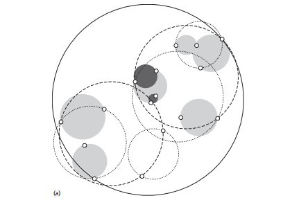

KNN算法原理
K近邻法(k-nearest neighbors,KNN)是一种基本的机器学习方法，该方法的思路是：在特征空间中，如果一个样本附近的k个最近(即特征空间中最邻近)样本的大多数属于某一个类别，则该样本也属于这个类别。
KNN做回归和分类的主要区别在于最后做预测时候的决策方式不同。KNN做分类预测时，一般是选择多数表决法，即训练集里和预测的样本特征最近的K个样本，预测为里面有最多类别数的类别。而KNN做回归时，一般是选择平均法，即最近的K个样本的样本输出的平均值作为回归预测值。两者其它区别不大，本文介绍的分类方法在回归中也适用。
KNN算法三要素
对于KNN算法，主要任务就是确定：k值的选取，距离度量的方式和分类决策规则。分类决策规则一般都是用的之前提到的多数表决法。
k值的选取
k值的选择并没有一个固定的规则，一般可以选择较小的k值，也可以通过交叉验证确认最佳的k值。
如果k值选择偏小，相当于用较小的领域中的训练实例进行预测，训练误差会减小。但这只在与训练数据相似分布的数据上有较好的效果。也就是说，k值越小，模型偏差越大，越容易发生过拟合。
如果k值选择偏大，相当于用较大领域中的训练实例进行预测，其优点是可以减少泛化误差，但缺点是训练误差会增大。同时也意味着模型更加简单。一个极端的例子就是使k等于样本数，则意味着完全没有分类，输入的实例永远被认为是训练集中最多的类别，模型过于简单。
距离的度量
在KNN中，距离的度量的方式一般使用的是欧式距离。欧氏距离的公式如下：
$$ D(x,y) = \sqrt{(x_1-y_1)^2 + (x_2-y_2)^2 + … + (x_n-y_n)^2} = \sqrt{\sum\limits_{i=1}^{n}(x_i-y_i)^2} $$
多数情况下欧氏距离就能满足模型建立的需求
除了欧式距离，也可以使用别的度量方式，如曼哈顿距离：
$$ D(x,y) =|x_1-y_1| + |x_2-y_2| + … + |x_n-y_n| =\sum\limits_{i=1}^{n}|x_i-y_i| $$
或者一个更加通用的距离公式，称为$L_p$距离或闵可夫斯基距离(Minkowski Distance)，公式如下：
$$ D(x,y) =\sqrt[p]{(|x_1-y_1|)^p + (|x_2-y_2|)^p + … + (|x_n-y_n|)^p} =\sqrt[p]{\sum\limits_{i=1}^{n}(|x_i-y_i|)^p} $$
可以看出，曼哈顿距离是闵可夫斯基距离p取1时的特例；而欧氏距离是p取2时的特例。
KNN算法实现
暴力实现（brute-force）
暴力实现，就是要找到k个最近的邻居来做预测，只需要计算预测样本和所有训练集中的样本的距离，然后计算出最小的k个距离即可，接着多数表决，很容易做出预测。在小样本情况下很好用，但当数据集变大时，计算时间大幅上升，所以是不可取的。
KD树实现（K-dimensional tree）
KD树算法没有一开始就尝试对测试样本分类，而是先对训练集建模，建立的模型就是KD树，建好了模型再对测试集做预测。所谓的KD树就是K个特征维度的树，注意这里的K和KNN中的K的意思不同。KNN中的K代表最近的K个样本，KD树中的K代表样本特征的维数。为了防止混淆，后面我们称特征维数为n。
KD树的建立
KD树建树采用的是从m个样本的n维特征中，分别计算n个特征的取值的方差，用方差最大的第k维特征$n_k$来作为根节点。对于这个特征，我们选择特征$n_k$的取值的中位数$n_{kv}$对应的样本作为划分点，对于所有第k维特征的取值小于nkv的样本，我们划入左子树，对于第k维特征的取值大于等于nkv的样本，我们划入右子树，对于左子树和右子树，我们采用和刚才同样的办法来找方差最大的特征来做更节点，递归的生成KD树。具体流程可见下图：

以一个大小为6的二维样本{(2,3)，(5,4)，(9,6)，(4,7)，(8,1)，(7,2)}为例，构建kd树的具体步骤为：
- 找到划分的特征。6个数据点在x，y维度上的数据方差分别为6.97，5.37，所以在x轴上方差更大，用第1维特征建树。
- 根据x维上的值将数据排序，取中位数作为划分点，所以划分点的数据是（7,2）。这样，该节点的分割超平面就是通过（7,2）并垂直于划分点维度的直线x=7。划分后如下图所示：
 - 分割超平面x=7将整个空间分为两部分：x<=7的部分为左子空间，包含3个节点={(2,3),(5,4),(4,7)}；另一部分为右子空间，包含2个节点={(9,6)，(8,1)}。
- 用同样的办法划分左子树的节点{(2,3),(5,4),(4,7)}和右子树的节点{(9,6)，(8,1)}。最终得到KD树。如下图所示：

搜索最近邻
成功构建kd树后，就要根据已有的树去搜索输入样本的最近邻，这也是较为重要与复杂的一部分。搜索可以概括为以下两个部分：
- 寻找近似点：寻找最近邻的叶子节点作为目标数据的近似最近点。
- 回溯：以目标数据和最近邻的近似点的距离沿树根部进行回溯和迭代。
以样本输入目标点$(2，4.5)$为例，来搜索他的最近零
- 计算近似最近点：通过查找KD树（类似二叉搜索树的查找），可以知道最后落在节点（4，7）上。所以将该点作为近似点，并计算它与目标点的距离（欧氏距离）为3.20。
- 之前形成的搜索路径为<(7,2)，(5,4)，(4,7)>，回溯计算父节点（5，4）与目标节点的距离，结果为3.04，小于近似点与目标点的距离，说明近似点的假设不成立，将（5，4）作为最新的近似点。
如果（5，4）与目标点距离大于当前近似点与目标点的距离，则继续向上回溯。
- 以（2，4.5）为圆心，3.04为半径作圆，发现与超平面y=4交割（也就是（5，4）对应的分割面），也就意味着需要进入（5,4）左子空间（子树）进行查找，也就是将（2,3）节点加入搜索路径中得<(7,2)，(2,3)>。
- 计算发现叶子节点（2，3）与目标点距离为1.5小于当前的3.04，所以更新（2，3）为最新的近似点。
- 从点（2，3）开始继续以上述相同思路回溯查找。最终到达（7，2），以（2,4.5）为圆心1.5为半径作圆，并不和x = 7分割超平面交割，也就意味着搜索结束，点（2，3）为最近邻点，最近距离为1.5
整个回溯流程的简图如下：

总结
有了搜索最近邻的方法，搜索k近邻就是在找到最近邻后，去掉这个最近邻，在剩下的节点中找最近邻，直到找到k个为止。
虽然kd树提高了knn的搜索效率，但有时也会效率很低，比如处理不均匀分布的数据集时。一个导致性能下降的最核心因素是因为kd树的平面是一个个的方形，求最近邻时使用的是圆形。方形平面跟圆形相交的可能性是极高的，如果方形的交汇点多的话，圆形和几个平面相交的可能性就变得更大。这样，凡是相交的平面，都需要进行回溯搜索，大大的降低运行效率。
球树（Ball Tree）
基于kd树的缺点，人们进行了相应的改进，也就诞生了球树算法
球树的建立
球树，顾名思义，就是每个分割块都是超球体，而不是KD树里面的超矩形体。具体形式如下图：

建树具体流程如下：
- 先构建一个超球体，这个超球体是可以包含所有样本的最小球体。
- 从球中选择一个离球的中心最远的点，然后选择第二个点离第一个点最远，将球中所有的点分配到离这两个聚类中心最近的一个上，然后计算每个聚类的中心，以及聚类能够包含它所有数据点所需的最小半径。这样我们得到了两个子超球体，和KD树里面的左右子树对应。
- 对于这两个子超球体，递归执行步骤2. 最终得到了一个球树。
球树搜索最近邻
使用球树找出给定目标点的最近邻方法是首先自上而下贯穿整棵树找出包含目标点所在的叶子，并在这个球里找出与目标点最邻近的点，这将确定出目标点距离它的最近邻点的一个上限值，然后跟KD树查找一样，检查兄弟结点，如果目标点到兄弟结点中心的距离超过兄弟结点的半径与当前的上限值之和，那么兄弟结点里不可能存在一个更近的点；否则的话，必须进一步检查位于兄弟结点以下的子树。
检查完兄弟节点后，向父节点回溯，继续搜索最小邻近值。当回溯到根节点时，此时的最小邻近值就是最终的搜索结果。
KD树在搜索路径优化时使用的是两点之间的距离来判断，而球树使用的是两边之和大于第三边来判断，相对来说球树的判断更加复杂，但是却避免了更多的搜索，这是一个权衡。
KNN算法的扩展
限定半径最近邻算法
有时候我们会遇到这样的问题，即样本中某系类别的样本非常的少，甚至少于K，这导致稀有类别样本在找K个最近邻的时候，会把距离其实较远的其他样本考虑进来，而导致预测不准确。为了解决这个问题，我们限定最近邻的一个最大距离，也就是说，我们只在一个距离范围内搜索所有的最近邻，这避免了上述问题。这个距离我们一般称为限定半径。
质心算法
这个算法比KNN还简单。它首先把样本按输出类别归类。对于第L类的$C_l$个样本。它会对这$C_l$个样本的n维特征中每一维特征求平均值，最终该类别所有维度的n个平均值形成所谓的质心点。对于样本中的所有出现的类别，每个类别会最终得到一个质心点。当我们做预测时，仅仅需要比较预测样本和这些质心的距离，最小的距离对于的质心类别即为预测的类别。这个算法通常用在文本分类处理上。
KNN总结
优点
- 理论成熟，思想简单，既可以用来做分类也可以用来做回归
- 可用于非线性分类
- 训练时间复杂度比支持向量机之类的算法低，仅为$O(n)$
- 和朴素贝叶斯之类的算法比，对数据没有假设，准确度高，对异常点不敏感
- 由于KNN方法主要靠周围有限的邻近的样本，而不是靠判别类域的方法来确定所属类别的，因此对于类域的交叉或重叠较多的待分样本集来说，KNN方法较其他方法更为适合
- 该算法比较适用于样本容量比较大的类域的自动分类，而那些样本容量较小的类域采用这种算法比较容易产生误分
缺点
- 计算量大，尤其是特征数非常多的时候
- 样本不平衡的时候，对稀有类别的预测准确率低
- KD树，球树之类的模型建立需要大量的内存
- 使用懒散学习方法，基本上不学习，导致预测时速度比起逻辑回归之类的算法慢
- 相比决策树模型，KNN模型可解释性不强
If you like this blog or find it useful for you, you are welcome to comment on it. You are also welcome to share this blog, so that more people can participate in it. If the images used in the blog infringe your copyright, please contact the author to delete them. Thank you !